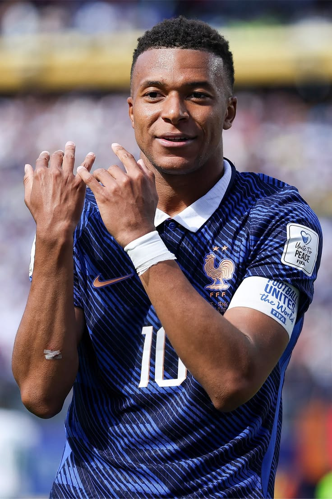

Kylian Mbappé
França
O camisa 10 francês fez uma Copa histórica, quebrando o recorde de artilharia ao marcar 10 gols no torneio e levando a França até as fases finais com sua velocidade incrível.


O camisa 10 francês fez uma Copa histórica, quebrando o recorde de artilharia ao marcar 10 gols no torneio e levando a França até as fases finais com sua velocidade incrível.

Principal referência do ataque brasileiro, comandou a Seleção Canarinho com seus dribles desconcertantes, assistências decisivas e muita liderança dentro de campo.

O gênio argentino mostrou sua genialidade mais uma vez, sendo o cérebro da equipe e conduzindo a Argentina com gols e passes mágicos até a prorrogação da grande final.
Entrou para a história do futebol espanhol ao marcar o gol do título na prorrogação contra a Argentina, coroando a campanha invicta e garantindo o bicampeonato mundial da Fúria.
Aos 41 anos, o lendário camisa 7 alcançou um feat inédito na história do esporte ao se tornar o primeiro jogador a balançar as redes em seis edições diferentes de Copa do Mundo.
O jovem maestro alemão comandou o meio-campo com muita habilidade, passes precisos e jogadas geniais, mostrando que é a grande realidade e o futuro da seleção da Alemanha.
O dinâmico meio-campista inglês ditou o ritmo das partidas com sua força física, visão de jogo apurada e gols decisivos, sendo o grande motor da seleção da Inglaterra.
O impressionante atacante norueguês aterrorizou as defesas adversárias com sua força avassaladora e faro de gol implacável, consagrando-se como um dos atacantes mais perigosos do torneio.
Com sua incrível habilidade em duelos individuais e arrancadas velozes pela ponta esquerda, quebrou as marcações rivais e liderou o vistoso ataque da seleção japonesa.
Com sua inteligência tática genial e passes milimétricos, o experiente capitão da geração belga distribuiu assistências fantásticas e organizou todo o sistema de jogo do time.
O lendário camisa 10 croata desfilou classe e fôlego invejável no meio-campo. Ele ditou o ritmo e a cadência dos jogos da Croácia em sua última e marcante participação em Mundiais.
Um verdadeiro paredão na linha de defesa. O capitão holandês dominou o jogo aéreo e os desarmes por baixo, liderando a Laranja Mecânica com muita firmeza e imponência física.